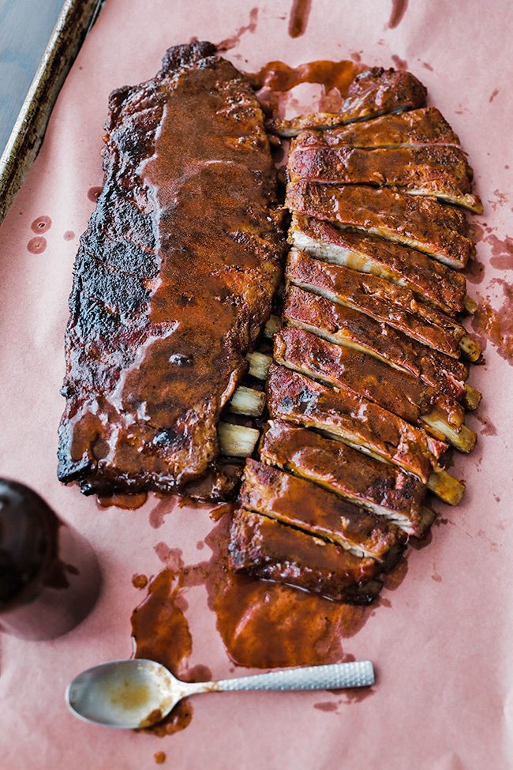

Smoked St. Louis Style Ribs

Desciption
St. Louis-style spare ribs are cut closer to the belly at the bottom part of the rib cage, while baby back ribs are cut higher towards the back
Ingredients
- Spice Rub
- Ribs
- Mustard
- Spritzer and Sauce
Steps
- Preheat your smoker using your favorite flavored wood to 240° to 250°.
- Make your dry rub and set aside.
- Using a small amount of either yellow or Dijon mustard spread a thin layer on both sides of the ribs.
- Sprinkle your rub evenly all over the rubs, ensuring it completely covers them. Season, but do not cake the rub on it. It should not be a thickly coated rub.
- Place them bone-side down evenly on the smoker. Scrunch the ribs together once on the smoker to compact them. This will help seal in juices similar to that of trussing.
- Smoke for 1 hour and then spritz 8-10 sprays on the ribs. Repeat this process every 30 minutes for the next 90 minutes.
- After a total of 3 hours of smoking, remove the ribs from the smoker. Pour about ½ cup of the mixed BBQ sauce all over the ribs and rub it in.
- Add about ¼ cup of the mixed BBQ sauce onto the center of a large sheet of heavy-duty foil or peach paper where the ribs are going to go
- add the ribs bone side up to the top of the sauce on the foil and wrap them extremely tight by folding over and covering up the ribs. Place the ribs back on the smoker bone side up and cook for 2 ½ to 3 hours or until done.
- Remove the ribs from the smoker and let rest in the foil for 30 to 45 minutes before slicing and serving.